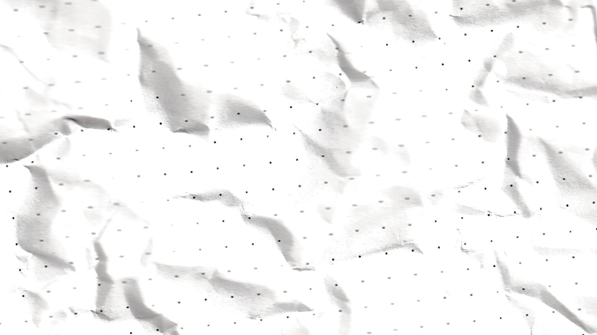
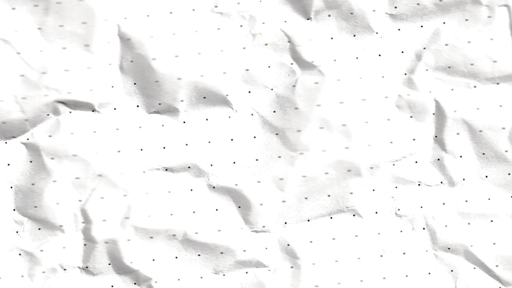

paper doesn't only come from TREES! It can also come from cotton, certain grasses, hemp and straw. the Magna Carta was written on a large piece of parchment, known for its durability. Paper was (and still is) a medium used to convey legal documentation, religious scriptures, scrolls and books.